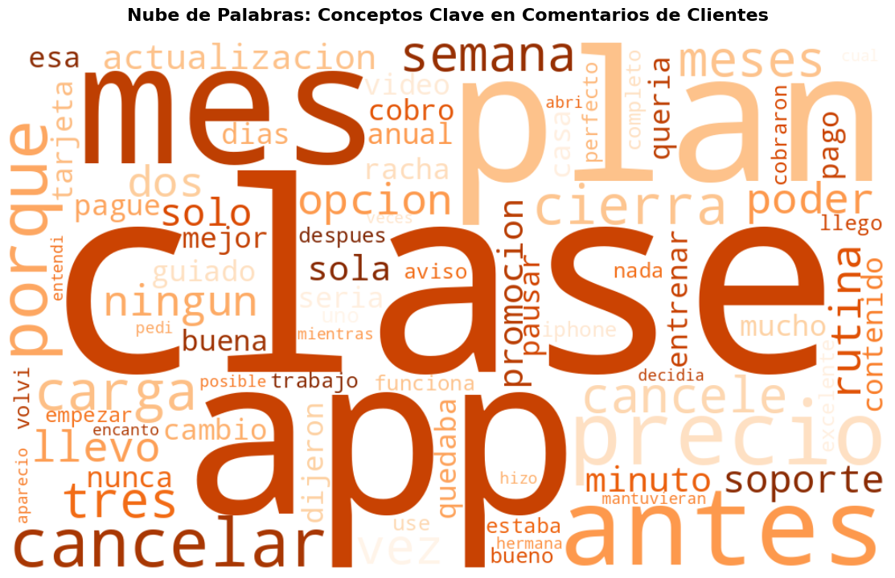

Pulso es una app colombiana de entrenamiento en casa por suscripción. Cada mes cancelan más clientes y el equipo no se pone de acuerdo en la razón.
Plan Mensual
$29.900al mes
Plan Anual
$19.900equivalente al mes
Promo 3 meses
$9.900 → $29.900el precio se triplica al día 90
Mercadeo “Es el precio”
Producto “Es la competencia”
Soporte “Pierden el interés”
300clientes (muestra, corte 30-sep-2026)
34%cancelados (102)
63comentarios de 5 canales
Problemática del dataset
Los archivos venían tal como se exportaron: 9 problemas antes de poder confiar en ellos
306 → 300filas: 6 duplicados exactos
12 → 5variantes de ciudad (BOGOTA, Bogotá D.C., …)
5 → 2escrituras de estado (Cancelada, CANCELADO, …)
4“Activos” con fecha de cancelación
3cancelaciones anteriores al registro
2sesiones posteriores al corte (hasta 2027)
4edades imposibles (0 y 199)
412sesiones en 30 días (el siguiente es 16)
55%de NPS vacío (encuesta voluntaria)
Criterio: no se borran filas por un error en un solo campo; se marcan con una bandera y se excluyen solo del cálculo que afectan. El NPS no se imputó porque quien no responde no es aleatorio.
Además: “Promo 3 meses” venía como canal de adquisición, no como plan.
Lo realizado · decisiones clave
Siete decisiones que cambiaron las conclusiones
Cancelados: 102 → 98 → 102 Al quitar duplicados bajaron a 98. Los 4 “activos” con fecha tenían 0 sesiones: se reclasificaron y se probó que la conclusión no cambia sin ellos.
Precio de la promo validado Los clientes a $9.900 tienen hasta 85 días; los de $29.900, desde 91. El cambio ocurre al día 90.
Variable circular descartada Las sesiones de los últimos 30 días son casi 0 en los cancelados por construcción. Tickets es un acumulado: no es efecto del soporte.
Ventana de 60 días Solo clientes con 60 días o más desde el registro (274), para que todos hayan tenido la misma oportunidad de cancelar.
Tasa, no conteo Más cancelaciones puede ser solo una base más grande. Se calculó la tasa sobre clientes en riesgo, con iOS como grupo de control.
Se corrigió a la IA Concluyó que la promo empeoró (≈35% vs 58%). Por cohorte: 52% vs 45%. Era volumen de registros, no deterioro.
Comentarios depurados: 63 → 59 (2 duplicados, 1 spam, 1 ajeno al servicio). K048 tiene 5 estrellas pero es una queja con sarcasmo: se clasificó por contenido, no por estrellas.
Hallazgo 1 · dónde se rompe
Dos picos: antes del día 60 en todos los canales y justo después del día 90 en la promo
Cancelaciones por días desde el registro
Otros canalesPromo 3 meses
Cancela en sus primeros 60 días
El 89% de las cancelaciones tempranas (34 de 38) no completó el onboarding
59%de las cancelaciones, en los primeros 90 días
23 de 26cancelaciones entre los días 91 y 120 son de promo
35% vs 2%sin onboarding vs con onboarding
Hallazgo 2 · lo que cambió en julio
La tasa de Android se duplicó desde julio; la de iOS se mantuvo
% de clientes en riesgo que cancela en el mes
AndroidiOS
5,2% → 11,2%Android, enero-junio vs julio-septiembre
4,5% → 3,4%iOS (grupo de control)
37 vs 17cancelaciones de Android vistas vs esperadas (jul-sep)
13 de 13comentarios técnicos son posteriores al 1 de julio
Samsung, Xiaomi, Motorola y Android 13; dos clientes dicen que en iPhone funciona bien. Es una asociación fuerte, no una prueba: falta el historial de versiones.
Hallazgo 3 · atribución
Tres causas, ninguna es la competencia; el ritmo de cancelación se multiplicó por 2,5
Cancelaciones por mes, según causa
OnboardingFin de promoAndroidOtros
Ingreso mensual perdido por causa
41%
33%
22%
6,4 → 16cancelaciones por mes
×2,6ritmo de ingreso perdido desde julio
Antes de julio dominaba el onboarding. Desde julio se suman la promo y Android (42% de las cancelaciones).
Voz del cliente
Los comentarios explican el porqué: falla técnica, precio sin aviso y onboarding
59 comentarios útiles, por categoría con problema
Precio: “Me cobraron $29.900 y yo venía pagando $9.900. Nadie me avisó.”Onboarding: “La primera clase que me salió era avanzada y no pude seguirla. No volví.”Técnica: “En iPhone funciona normal, a mí en Xiaomi se me cierra siempre.”“Quise pausar la suscripción y no existe esa opción. Tocó cancelar.”
Ningún comentario menciona una app competidora. Con 59 comentarios sirven para explicar, no para medir porcentajes.
Voz del cliente · nube de palabras
Las palabras más repetidas apuntan a los mismos quiebres que muestran los datos

Sentimiento: predominan los problemas
70%
20%
10%
Reporta un problema (41)Positivo (12)Pide funciones (6)
“Clase” y “app” dominan porque describen el producto; el mensaje está en las palabras que las acompañan. El tamaño indica frecuencia en una muestra pequeña (63 comentarios): sirve para explicar los motivos, no para medir porcentajes de la base.
Solución · acciones
Tres acciones priorizadas, cada una con KPI, meta y forma de medirla
1 · Corregir Android
Reproducir la falla, publicar la corrección y compensar a los afectados.
11% → 5%tasa mensual de Android · iOS como control
2 · Rediseñar el onboarding
Test más corto, plan guiado automático y recordatorios en los días 1, 3 y 7.
65% → 75%completa el onboarding · prueba A/B de 6-8 semanas
3 · Avisar el cambio de precio
Avisos en los días 60, 75 y 85; plan intermedio y opción de pausar.
50% → 35%cancela en los 30 días tras el cobro · A/B por cohorte
9 menoscancelaciones tempranas si el 35% sin onboarding baja a 25% (límite superior)
No bajar el precioel precio solo pesa en la promo: el problema es el salto sin aviso
IA a futuro · arquitectura propuesta
Detectar el problema en semanas, no en meses
Clientes y pagos
Eventos de la app
Comentarios
↓
Ingesta y calidad de datosvalidación, normalización, deduplicación (los 9 problemas de este caso)
↓
Capa analítica de clientessegmentos, eventos, historial de uso y cancelaciones
↓
IA sobre comentariosun LLM clasifica motivos y detecta tendencias (sarcasmo, spam)
Alertas de riesgoonboarding al día 3-7, tasa por dispositivo y versión, aviso al día 60 de la promo
↓
Acciones de retención y mediciónCRM, soporte, producto, experimentos A/B y evaluación de resultados
Qué habría detectado ya
Jul-2026la alerta por dispositivo salta: Android 16,2% vs umbral 9,4%
Día 30clientes sin onboarding y con 0-3 sesiones entran a la lista de riesgo
Se mide el propio sistema: tiempo de detección, precisión de las alertas y efecto en retención (grupo contactado vs no contactado).
Empezar con reglas interpretables y clasificación asistida por IA; el modelo de predicción cuando haya más historial de comportamiento.
Prototipo · regresión logística
El modelo prioriza bien, pero una regla simple ya capta casi todo
Cancelación observada (días 31-60) por nivel de riesgo
Validación cruzada de 5 particiones · 266 clientes, 30 cancelaciones
0,86AUC del modelo
0,82AUC de la regla “sin onboarding”
70%de las cancelaciones, contactando al 20% de mayor riesgo (precisión 40% vs 11% base)
90%de las cancelaciones marca la regla simple (34% de los clientes)
Se predice entre el día 31 y el 60 para no contaminar el uso del primer mes. Con 30 casos es una demostración: el siguiente paso es sumar sesiones de los días 3, 7 y 14 y validar con A/B.
Preguntas para la gerente: ¿qué cambió en la app en julio? · ¿cambió la campaña de promo (registros: 1 en julio, 7 en agosto)? · ¿se avisa antes del primer cobro completo?
Conclusiones
Los clientes no se van por la competencia ni por perder el interés: se van por tres fallas de la experiencia
1 · Onboarding fallido
46%de las cancelaciones · 41% del ingreso perdido
Cancela el 35% de quienes no lo completan frente al 2% de quienes sí. Es el problema estructural.
2 · Fin de la promo sin aviso
28%de las cancelaciones · 33% del ingreso perdido
La mitad de los clientes de promo (21 de 42) cancela en los 30 días siguientes al salto de $9.900 a $29.900.
3 · Falla técnica en Android
≥22%de las cancelaciones · 22% del ingreso perdido
La tasa mensual pasa de 5,2% a 11,2% desde julio y la de iOS se mantiene. Explica el aumento reciente.
Mercadeo: parcialmente cierto El precio solo pesa en la promo, y el problema es el salto sin aviso, no el precio en sí.
Producto: sin respaldo Ninguno de los 59 comentarios útiles menciona una app competidora.
Soporte: es consecuencia La pérdida de interés aparece en 2 comentarios y sigue a un onboarding fallido; no es una causa independiente.
3 momentosdonde se rompe: primeros días, día 90 y, desde julio, el uso en Android
×2,5el ritmo de cancelación desde julio (6,4 → 16 por mes)
1.º Androidluego onboarding y aviso de la promo, cada uno con KPI y prueba A/B
Límites: muestra de 300 clientes (sirve para comparar causas, no para estimar la pérdida total); las asociaciones no prueban causalidad y la falla de Android necesita el historial de versiones; el modelo de riesgo es una demostración con 30 cancelaciones.